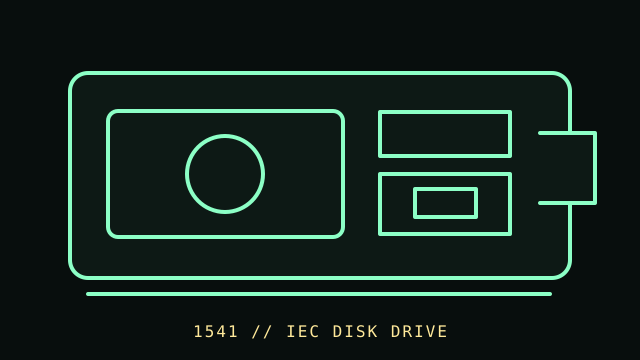

[ FLOPPY DRIVES // IDENTIFIED MODEL ]
Commodore 1541 Disk Drive
The Commodore 1541 is an external 5.25-inch drive designed for Commodore 8-bit computers. Its serial bus, on-drive controller, and disk format distinguish it from a PC floppy mechanism.

MODEL IDENTIFICATION: Commodore 1541 family; record the exact 1541 / 1541-II marking, serial, board and power-supply revision. The record distinguishes source-documented facts from model/revision-dependent behavior; it is not a compatibility guarantee.
Recorded specifications
| Catalog model | Commodore 1541 Disk Drive |
|---|---|
| Device type | External 5.25-inch drive with on-drive controller |
| Interface / connector | Commodore serial IEC bus to the host; the drive is not driven by a PC 34-pin floppy controller. |
| Media / formats | 5.25-inch magnetic disk. Commodore DOS/GCR formats are system-specific; standard 1541 DOS geometry and formatted capacity depend on the disk/software convention. |
| Revision caution | Confirm the complete model designation, nameplate, connector, board/firmware revision, and service-manual edition. Related family names are not proof of interchangeable parts or host support. |
Host and controller compatibility
- Designed for Commodore hosts and the IEC serial protocol; host software and device addressing must match the connected system.
- The 1541, 1541C, and 1541-II have hardware, board, and power-supply differences. Identify the suffix and service revision before substituting parts.
- Do not infer PC compatibility from the disk size: disk encoding and controller protocol differ from IBM-compatible PC formats.
Safe preservation and cleaning
Disconnect power and bus cables before inspection. If a disk is contaminated, do not insert it. Follow the service manual for the exact drive revision; avoid unapproved solvents or contact with the head and do not adjust alignment as a first-line cleaning step.
For preservation, photograph labels and connector/board markings before service; document the host, controller, software, settings, and observed condition. Keep original media or raw captures intact and verify checksummed copies before making derivatives.
Manufacturer manuals & archival references
- Commodore 1541 Users Guide — Zimmers.net manual archiveManufacturer user documentation held in a long-running Commodore manual archive.
- Commodore 1541 service documentation — Zimmers.net archive indexUse the archived service/manual files for the exact 1541 board and revision.
- Commodore 1541-II Users Guide — Zimmers.net manual archiveUseful comparison for the later 1541-II; not a substitute for the original unit’s own documentation.
Archive scans and project pages may cover a family or a particular revision. The full model/revision-specific manufacturer manual takes precedence. Capacity or recording mode is omitted where it cannot be tied to the cited model and format.